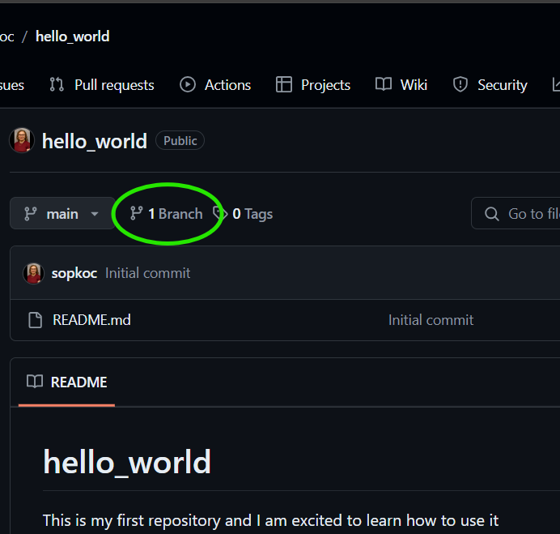

Using GitHub Without the Command Line
Introduction
GitHub is a platform used by developers, engineers, and designers worldwide to collaborate and share code. This guide will help you learn to use GitHub without needing to touch the command line. You will learn to:
- Create an account on GitHub.com
- Create a repository
- Manage and create branches
- Commit changes to a repository
- Open and merge pull requests
- Create mentions and discussion
Glossary of Key GitHub Terms
- Repository (Repo): A container for organizing a project, including all of the project’s files and their revision history.
- Branch: A parallel version of a repository. It diverges from the main working project to work on changes separately until they're ready to be merged back.
- Commit: A snapshot of changes made to files in a repository. Each commit has a unique ID and a message describing the changes.
- Pull Request (PR): A request to merge changes from one branch into another. It allows for code review and discussion before merging.
- Merge: Combining changes from different branches into one branch.
- README.md: A markdown file typically included in repositories to provide information about the project.
- Markdown: A lightweight markup language with plain text formatting syntax, often used for README files.
1. Create a GitHub Account
- Visit GitHub.com.
- Pick a username, enter your email address, and choose a password.
- Follow the prompts to complete the account setup.
2. Create a Repository
- Click the "+" sign next to your avatar in the top right corner and select "New repository."
- Name your repository
hello-world. - Write a short description of your project.
- Select "Public."
- Select "Initialize this repository with a README."
- Click "Create repository."
Step 3. Create a New Branch
- In your
hello-worldrepository, click the "branch" button. 
- Click the large green button that says "New Branch"
- Type a branch name, e.g.,
readme-edits. - Click "Create branch"
Understanding Branching
Branching involves diverging from your main line of development and continuing to work without affecting that main line. When you initialize a new Git repository, by default you’re checked into the main branch. Branching can be a great way of working on a feature of a project without affecting the main code. When you have finished working on your new feature you can then merge your new code into the main codebase, the main branch.
main
|
+--- development
After multiple changes, the development branch is then merged back into the main branch.
4. Make Changes and Commit Them to the Repository
- Ensure you are in the
readme-editsbranch. - Click on the
README.mdfile. - Click the pencil icon to edit the file.
- Add some text to the file.
- Write a commit message describing your changes.
- Click "Commit changes."
- Hint: If you don't see your changes check to make sure you are following markdown formatting.
Understanding Commits
When a change is made, these changes are saved as commits. Each time you commit it is a good idea to add a short commit message. This creates a readable history of the project and allows others who may be contributing to the project to understand what is going on at a glance.
5. Open a Pull Request and Merge Changes
- Click the "Pull requests" tab.
- Click "New pull request."
- Select
readme-editsto compare withmain. - Review the changes and click "Create pull request."
- Write a description of your changes.
- Click "Create pull request."
- Click "Merge pull request."
- Click "Confirm merge."
- Optionally, delete the
readme-editsbranch if no longer needed. This is good practice to delete the branch when you are done with it.
Understanding Pull Requests
Pull Requests are what makes GitHub such a great tool for collaboration. At this point, we have made changes to a file ourselves, but in theory, anybody could make these changes and then ask for a Pull Request, allowing their edits to be merged into a project. A Pull Request needs to be reviewed before the changes are merged; this prevents bad work from entering a branch.
A Pull Request will highlight the differences (often called Diffs) in the content between branches. Changes can be additions or subtractions to the content. Additions are highlighted in green while subtractions are highlighted in red.
6. Create Mentions and Discussion
- In a pull request, use the
@symbol followed by a username to mention a collaborator. - This can flag issues or invite discussion on specific changes.
More on Mentions & Discussions
Mentions are a powerful way to bring specific people's attention to a pull request, issue, or comment. By using @username, you can notify a team member about something that needs their review or input. This is especially useful for highlighting issues, assigning tasks, or simply ensuring that someone is aware of a particular discussion.
In addition to mentions, GitHub provides a platform for discussion where collaborators can comment on pull requests and commits. This fosters a collaborative environment where feedback can be given, questions can be asked, and ideas can be shared. Keeping discussions in pull requests and issues helps maintain a clear history of decisions and changes related to the project.
7. Conclusion
By completing this tutorial, you've learned to:
- Create a repository.
- Start and manage a new branch.
- Make and commit changes.
- Open and merge a pull request.
- Create mentions and discussions.
Next, you can explore more advanced features of GitHub or personalize your profile. Happy coding!